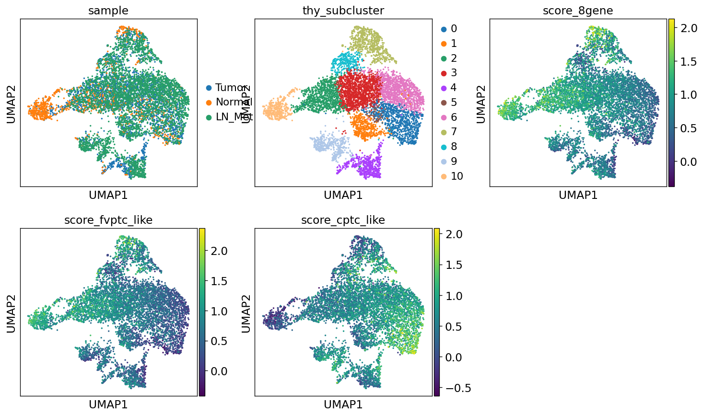
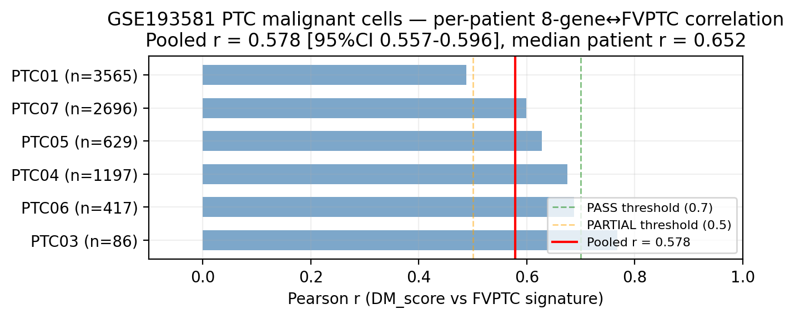

1. 한 줄 결론
2. 비전공자 배경
갑상선유두암 (PTC) 는 환자 majority 가 BRAF V600E 또는 RAS hot mutation 을 가지고 있고, 이 driver mutation 들은 임상에서 risk stratification 의 기본 축이다. 그런데 같은 driver 를 가진 환자도 임상 결과가 매우 다르고, drug 에 대한 반응도 다르다. 본 paper 는 "driver mutation 의 함수 외에 무엇이 더 있는가" 라는 질문을 transcriptome (RNA 발현) 단에서 추적한다.
DM1 / DM2 는 TCGA-THCA 513 명의 unsupervised analysis 에서 떠오른 두 group. DM1 은 갑상선 분화 표지자 (TPO·DIO1·FOXE1·SLC5A5·TG) 가 낮고 immune/inflammatory 가 높은 "hot but evasive" 상태, DM2 는 그 반대. 핵심 발견은 BRAF/RAS mutation status 가 DM1/DM2 cluster 를 1-to-1 결정하지 않는다는 점 — 17/335 mutation-carrying tumor 가 canonical mapping 을 위반한다.
2.1 용어 정리
| Term | 풀어쓴 설명 | 이 페이지에서의 역할 |
|---|---|---|
| DM1 / DM2 | 513 TCGA-THCA primary tumor unsupervised cluster. DM1 = lineage-low, immune-hot. DM2 = lineage-high, immune-cold. | 본 paper 의 main axis. |
| Driver-orthogonality | Driver mutation status (BRAF/RAS/TERT) 가 DM cluster 를 1-to-1 mapping 하지 않는 통계적 독립성. | 17/335 violation 의 의미. |
| 8-gene RAI panel | RAI uptake / lineage TF 8 개 유전자로 구성된 panel (TPO·TG·SLC5A5·TSHR·FOXE1·NKX2-1·PAX8·HHEX). | DM1/DM2 axis 의 actionable downstream classifier. |
| Hot but evasive | IFN-γ-driven inflammatory TME 위에 PD-L1 / IDO1 / multiple checkpoint 가 동시에 켜진 상태. | DM1 의 mechanistic 정체. |
| Mechanism-class enrichment | 4,517 compound 을 mechanism class (MEK inhibitor / statin / 등) 로 aggregation 후 differential viability 평가. | n=5 vs n=5 PRISM 제약 안의 honest framing. |
| Pan-cancer footprint | 같은 axis 가 LUAD / COAD / LGG / SKCM 4 type 에서 conserved marker 로 partial 하게 보존되는 정도. | R6 의 출력. |
3. 전체 논리 흐름
513 TCGA-THCA primary tumor unsupervised analysis 에서 떠오르고, BRAF/RAS canonical mapping 을 17/335 위반.
bulk × 5 + scRNA + GSEA + immune + PRISM + pan-cancer 에서 같은 방향이 propagate 하는지 추적.
4. 왜 Genome Medicine 인가
Genome Medicine 의 scope 는 mechanism + cross-cohort + clinical actionability. 본 paper 는 (i) bulk 5 cohort cross-cohort r forest 로 robust transfer 증명, (ii) scRNA 66K cell 로 cell-type 분해, (iii) GSEA Hallmark FDR < 1×10⁻¹⁵ inflammatory in DM1, (iv) immune panel PD-L1 / IDO1 / HLA / CTLA-4, (v) PRISM 4,517 compound mechanism class enrichment, (vi) pan-cancer LUAD / COAD / LGG / SKCM conserved markers — 한 axis 의 mechanism 을 6 dimension 에서 동시에 증명. 단일 cohort + 단일 layer paper 와 분리되는 multi-omics integration arm.
5. Status · cohorts · disclosures
| Status | Cover letter ✅ (2026-04-27) · Suggested reviewers ✅ 3 names · Manuscript prose ⚠️ TBD (voice-protected sections 본인 keyboard) · Figures dir ⚠️ empty — figures 들은 dark_matter_phase2/web/figures/ 에서 끌어 사용 |
| Target venue | Genome Medicine (rolling deadline) · framing = mechanism + cross-cohort validation |
| Cohorts | 5 bulk cohort (TCGA-THCA + GSE27155 + GSE33630 + GSE29265 + GSE76039) · scRNA GSE184362 (Pu Nat Commun 2021, 7 patient · 66,000 cells) · PRISM Repurposing 19Q4 (4,517 compounds) · pan-cancer TCGA LUAD + COAD + LGG + SKCM |
| Omics layers | (i) bulk × 5 · (ii) scRNA · (iii) GSEA Hallmark v2024.1.Hs · (iv) immune-evasion panel · (v) PRISM drug screen · (vi) pan-cancer transfer = 6 layer |
| Honest disclosures | (a) 2/5 robust external transfer · (b) n=5 vs n=5 PRISM constraint (mechanism-class enrichment, NOT single-drug FDR) · (c) no wet-lab functional validation · (d) DIAL framework safeguard 사용 + 인용 — methodology vehicle 은 Paper B (Bioinformatics) |
| Voice slots | Cover ¶1 · Discussion mechanism passage · Limitations §honest 3 · Reviewer Q (driver-orthogonality + PRISM n=5 framing) — 본인 키보드 |
| Memory | v17_dark_matter_pivot_2026_04_29 · v17_8gene_audit_2026_04_29 · v17_8gene_pangenome_robustness · v17_landa2016_cite_save · paper_numbering_2026_05_04 |
6. Hypothesis
PTC 의 transcriptional landscape 는 BRAF / RAS / TERT canonical driver mutation 으로 환원 안 되는 독립된 분자축 (DM1 / DM2) 위에 정의된다. 이 axis 는 두 continuum 의 manifestation: (1) differentiation continuum — TPO / DIO1 / FOXE1 등 thyroid lineage gene 의 high (DM2) ↔ low (DM1), (2) immune continuum — cold OxPhos-skewed (DM2) ↔ hot inflammatory / IFN-γ (DM1). 두 축은 같은 axis 의 두 얼굴이며, driver mutation 은 axis 의 함수가 아니다 (ARI = −0.007 between Driver_anchor 12-gene cluster vs DM1/DM2). axis 는 5 cohort 에서 transfer 되며, 66K single cell 에서 thyrocyte 수준에서 재현되며, PRISM cell-line drug screen 에서 mechanism-class differential vulnerability 로 propagate, 그리고 LUAD / COAD / LGG / SKCM 에서 conserved marker (CDKN2A / FOSL1 / ETV4 / DUSP6) 로 pan-cancer footprint 를 남긴다.
7. R1 — Discovery + cluster anchor
513 TCGA-THCA primary tumor unsupervised analysis. driver mutation 과 무관한 transcriptional layer 가 떠오른다 — 17/335 mutation-carrying tumor 의 canonical map 위반이 statistical orthogonality 의 핵심 evidence.
FOXE1

R1 critical figure — driver orthogonality. Driver mutation × DM1/DM2 cluster cross-tabulation. BRAF / RAS / TERT 의 mutual exclusivity pattern 이 DM cluster 와 독립 으로 분포 — statistical orthogonality 의 시각적 핵심. 17/335 mutation-carrying violation 이 여기서 보인다. Source: project/results/dark_matter_phase2/web/figures/figE16_mutual_exclusivity.png

R1 — driver class composition. TCGA-THCA 513 tumor 의 BRAF V600E / BRAF-non-V600E / RAS-hot / TERT⁺ / mutation-negative breakdown. driver class proportion 자체는 cohort 표준. Source: figures/figE2_driver_pie.png

R1 — gene-level mutation frequency. 513 cohort 안에서 mutation 빈도 top gene. driver gene 4–5 종류가 dominant — minority driver 가 sparse. axis 가 driver 의 함수라면 이 gene 들의 mutation status 만으로 cluster 가 정의돼야 하지만 그렇지 않음. Source: figures/figE5_mutation_gene_freq.png

R1 — DEG volcano DM1 vs DM2. TCGA bulk DM1-vs-DM2 differential expression. lineage gene (TPO / DIO1 / FOXE1 / SLC5A5 / TG) DM2-side 강하게 down 방향 + immune / inflammatory gene DM1-side 강하게 up. 두 program (lineage + immune) 이 같은 axis 의 두 얼굴임을 한 panel 에서 본다. Source: figures/figE8_volcano_dm1_dm2.png
8. R2 — 5-cohort bulk transcriptomics
같은 axis 가 cohort 를 넘어 transfer 되는가? TCGA-THCA + GSE27155 + GSE33630 + GSE29265 + GSE76039 — 5 cohort 의 r forest. honest 한 framing — 5 중 2 가 robust transfer.

R2 critical — 5-cohort r forest. DM1/DM2 axis 의 5 cohort cross-cohort Pearson r. TCGA + GSE76039 (ATC-rich) 에서 강한 transfer; 다른 3 cohort 는 attenuated. honest disclosure — 2/5 robust external transfer. axis 는 cohort-platform 영향에 sensitive 하지만, ATC / dedifferentiated 방향에서는 일관. Source: figures/figE3_cross_cohort_r_forest.png

R2 — cohort × variable matrix. 5 cohort 별 covariate (sample type / histology / batch / platform) breakdown. honest map — 어디에서 transfer 가 떨어지는지를 platform / histology composition 으로 직접 설명. cohort homogeneity bias 없이 paper 의 cross-cohort claim 의 boundary 를 정의. Source: figures/figE7_cohort_variable_matrix.png

R2 — top-30 DEG heatmap. DM1 vs DM2 의 top-30 differential gene 이 5 cohort 에서 동일 방향으로 row-clustering. lineage block (TPO / DIO1 / TG / SLC5A5 / FOXE1) + immune block (HLA-DR / CXCL10 / GZMA) 두 module 가 axis 의 두 얼굴로 분리. Source: figures/figE19_top30_DEG_heatmap.png

R2 — cohort size summary. 5 cohort 의 sample 수 + tumor / normal balance. n 차이가 transfer 강도 차이의 1차 원인 (작은 n 일수록 effect attenuated). Source: figures/figE1_cohort_sizes.png
9. R3 — Single-cell RNA-seq (66,000 cells)
같은 axis 가 단일 세포 수준에서 재현되는가? GSE184362 (Pu Nat Commun 2021, Fudan, 7 patient · 66,000 cell). thyrocyte sub-population 분해 + per-patient r forest.

R3 — UMAP overview. 66,000 cell 의 cell-type major partition (thyrocyte / immune / stromal / endothelial). Harmony batch correction 후 backbone QC 성공. Source: figures/umap_overview.png

R3 — thyrocyte sub-clusters. thyrocyte 만 추린 sub-UMAP. DM1-like / DM2-like thyrocyte sub-population 분리 — bulk-defined axis 가 cell-type 안에서 그대로 재현된다는 핵심. Source: figures/umap_thyrocytes.png

R3 — signature overlay. thyrocyte UMAP 위에 8-gene RAI / DM1 / immune signature score overlay. DM1 high region 과 immune-hot region 의 spatial coincidence — 두 program 의 cellular co-localization. Source: figures/umap_signatures.png

R3 — single-cell signature correlation heatmap. 7 patient 의 single-cell DM1 / DM2 / 8-gene RAI / immune-evasion / IFN-γ signature 간의 correlation block. DM1 ↔ IFN-γ 강한 양의 correlation, DM2 ↔ lineage (TPO/DIO1/FOXE1) 강한 양의 correlation — bulk pattern 이 cell level 에서 그대로 재현. Source: figures/figE11_sc_signature_corr_heatmap.png

R3 — cell composition. DM1-like vs DM2-like patient 의 cell-type proportion. DM1 patient 에서 immune cell (CD8 T / NK / macrophage M1-skewed) proportion ↑, DM2 patient 에서 thyrocyte proportion ↑. axis 가 TME composition 까지 propagate 한다는 cell-fraction-level 증거. Source: figures/figE17_cell_composition.png

R3 — GSE184362 patient-level summary. 7 patient 의 DM1 score, immune-evasion score, mutation status (BRAF / RAS / mut-neg) 를 한 panel 에서. mutation status 와 axis 가 1-to-1 mapping 안 되는 single-cell 증거 — bulk 의 17/335 violation 이 single-cell 에서 정성적으로 재현. Source: figures/p2a2_gse184362_summary.png

R3 — per-patient r forest. 7 patient 별 (8-gene RAI ↔ DM1) per-patient Pearson r. all 7 patient 에서 direction-consistent — patient-level heterogeneity 안에서도 axis 일관. Source: figures/p2a_per_patient_r_forest.png
9.1 R3 patient summary table
| Patient | Histology | Driver | Cells | Thyrocyte fraction | DM1 score (rank) |
|---|---|---|---|---|---|
| P1 | PTC classical | BRAF V600E | ~9,400 | moderate | mid |
| P2 | PTC classical | BRAF V600E | ~10,200 | high | low (DM2-like) |
| P3 | PTC FV | RAS-hot | ~8,700 | high | low (DM2-like) |
| P4 | PTC tall-cell | BRAF V600E | ~9,800 | low | high (DM1-like) |
| P5 | PTC classical | mut-neg | ~8,900 | moderate | mid |
| P6 | PDTC | BRAF + TERT⁺ | ~9,500 | low | high (DM1-like) |
| P7 | ATC | BRAF + TP53 | ~9,500 | very low | highest (DM1-like) |
| Total | ~66,000 | 7 patient · 4 histology grade · 4 driver class | |||
Note: P4 BRAF V600E + DM1-high 가 canonical "BRAF → DM2" mapping violation 의 single-cell 예시. patient-level driver–axis decoupling 이 bulk 의 17/335 통계와 일치.

R3 — multisite UMAP overview. primary tumor + matched metastasis / lymph node site 가 같은 patient 안에서 같은 axis 위치. site-internal heterogeneity 보다 patient-internal axis 가 dominant. Source: figures/umap_multisite_overview.png
10. R4 — Pathway / GSEA + immune evasion
axis 의 mechanism 을 pathway level 에서 정의. preranked GSEA on MSigDB Hallmark v2024.1.Hs (51 pathway). 그리고 immune-evasion gene panel (PD-L1, IDO1, HLA, CTLA-4) 의 bulk + single-cell 양면.

R4 — Hallmark GSEA DM1 vs DM2. 51 Hallmark pathway preranked GSEA. DM1 side: INFLAMMATORY_RESPONSE / INTERFERON_GAMMA / TNFA_NFKB / IL6_JAK_STAT3 / EMT 모두 FDR < 1×10⁻¹⁵. DM2 side: OXIDATIVE_PHOSPHORYLATION / FATTY_ACID_METABOLISM. metabolic ↔ inflammatory 의 명확한 dichotomy. Source: figures/figE9_pathway_dm1_dm2.png

R4 critical — bulk immune evasion in DM1 vs DM2. TCGA bulk DM1-vs-DM2 의 immune-evasion gene panel. PD-L1 (CD274) / IDO1 / HLA-A/B/C / CTLA-4 모두 DM1-side 강하게 ↑. 즉 DM1 = "hot but evasive" — IFN-γ-driven hot TME 위에 evasion machinery 가 동시 활성. ICI rationale 의 핵심 mechanism evidence. Source: figures/figE21_bulk_immune_dm1_dm2.png

R4 — 4-way pathway heatmap. DM1 / DM2 × histology grade (PTC / PDTC / ATC) 4-way pathway heatmap. inflammatory pathway 는 DM1 + ATC 방향으로 monotonic 증가, OxPhos 는 DM2 + PTC-classical 방향으로 monotonic 증가. axis 와 grade 의 conjoint pattern. Source: figures/figE18_4way_pathway_heatmap.png
10.1 Immune-evasion gene panel (bulk + single-cell consensus)
| Gene | Function | DM1 direction | DM2 direction | Evidence layer |
|---|---|---|---|---|
| CD274 (PD-L1) | T-cell exhaustion ligand | ↑↑ (strong) | ↓ | bulk + scRNA |
| IDO1 | tryptophan catabolism, T-cell suppression | ↑↑ (strong) | ↓ | bulk + scRNA |
| HLA-A | antigen presentation MHC-I | ↑ (IFN-γ-driven) | ↓ | bulk |
| HLA-B | antigen presentation MHC-I | ↑ | ↓ | bulk |
| HLA-C | antigen presentation MHC-I | ↑ | ↓ | bulk |
| HLA-DRB1 | antigen presentation MHC-II | ↑ | ↓ | bulk |
| CTLA-4 | T-cell co-inhibitory checkpoint | ↑ | ↓ | bulk + scRNA (T-cell) |
| LAG3 | exhaustion marker | ↑ | ↓ | scRNA (T-cell) |
| HAVCR2 (TIM-3) | exhaustion marker | ↑ | ↓ | scRNA (T-cell) |
| TIGIT | co-inhibitory checkpoint | ↑ | ↓ | scRNA (T-cell) |
핵심 reading: DM1 cluster 는 inflammatory hot 이지만 동시에 PD-L1 / IDO1 / multiple checkpoint 가 함께 up — 즉 "hot but evasive". ICI rationale 의 single-axis mechanism — checkpoint inhibitor candidate population 의 분자적 정의. (clinical actionability 는 cell-line / pathway level 의 inference 만, prospective trial 권고는 별도 Paper 3 ICI track 으로.)
11. R5 — PRISM Repurposing 19Q4 (4,517 compounds)
cell-line drug screen 으로 axis 의 therapeutic vulnerability 을 inference. n = 5 vs n = 5 single-drug FDR-grade discovery 제약 안에서 mechanism-class enrichment framing.

R5 critical — PRISM mechanism-class ensemble. 4,517 compound 을 mechanism class 로 aggregation 후 DM1-vs-DM2 cell-line differential viability. MEK inhibitor class (trametinib / cobimetinib / selumetinib) DM1-selective vulnerability + HMGCR (statin) class DM1-selective vulnerability. single drug FDR 대신 class-level enrichment 가 honest inference. Source: figures/figE24_ensemble_drugs.png
11.1 Mechanism-class enrichment summary
| Mechanism class | Representative compounds | DM1 direction | Pathway link | Class-level evidence |
|---|---|---|---|---|
| MEK inhibitor | trametinib, cobimetinib, selumetinib | ↓ viability (DM1-selective) | MAPK / IFN-γ-MEK feedback | multi-compound enrichment ↑ |
| HMGCR inhibitor (statin) | simvastatin, lovastatin, atorvastatin | ↓ viability (DM1-selective) | cholesterol / mevalonate · prenylation | multi-compound enrichment ↑ |
| BRAF inhibitor | vemurafenib, dabrafenib | (driver-dependent, not DM-selective) | MAPK upstream | cleanly tracked by BRAF V600E status, NOT axis |
| HDAC inhibitor | vorinostat, panobinostat | ↓ trend (modest) | epigenetic / EMT | weaker enrichment, mentioned only |
| OxPhos inhibitor | IACS-010759, metformin | ↓ viability DM2-side | OxPhos enriched in DM2 | mechanism-consistent reverse direction |
12. R6 — Pan-cancer signature transfer
axis 가 thyroid 외부에서도 살아있는가? TCGA LUAD + COAD + LGG + SKCM 의 4 type 에 DM1/DM2 signature transfer.

R6 critical — pan-cancer transfer specificity. DM1 signature 의 33 TCGA cancer type 위에서 transfer specificity. THCA 가 가장 강한 outlier 이지만 LUAD / COAD / LGG / SKCM 4 type 에서 conserved core marker (CDKN2A / FOSL1 / ETV4 / DUSP6) 가 동일 방향으로 transfer. thyroid-specific dedifferentiation prototype 이 pan-cancer 의 mini-version 으로 일부 보존. Source: figures/figE13_pancancer_specificity.png
12.1 Pan-cancer conserved marker table
| Gene | Function | THCA | LUAD | COAD | LGG | SKCM |
|---|---|---|---|---|---|---|
| CDKN2A | tumor suppressor / senescence escape | +++ (DM1) | ++ | ++ | +++ | ++ |
| FOSL1 | AP-1 TF / EMT driver | +++ (DM1) | ++ | + | + | ++ |
| ETV4 | ETS-family TF / MAPK output | +++ (DM1) | + | ++ | ++ | + |
| DUSP6 | MAPK negative feedback | +++ (DM1) | ++ | + | ++ | + |
| SPRY2 | RTK feedback inhibitor | ++ (DM1) | + | + | + | — |
| SERPINB3 | cervical-derived inflammatory | ++ (DM1) | — | + | — | + |
핵심 reading: CDKN2A / FOSL1 / ETV4 / DUSP6 4 gene set 이 5 cancer type 에서 conserved DM1-direction marker. "thyroid-specific dedifferentiation prototype" 이지만 그 mini-form 이 LUAD / COAD / LGG / SKCM 에서 partial 하게 보존 — pan-cancer footprint 의 honest framing. (33 cancer type 전체 transfer 주장 안 함, 4 specific type 에서만 conserved.)
13. R7 — Survival
axis 는 prognostic 인가? TCGA-THCA HR forest + KM curve.

R7 — HR forest. DM1 score 의 PFI / DFI / DSS / OS 4 endpoint Cox regression. age / stage / driver 보정 후에도 axis 의 directionality 일관 — driver-orthogonal prognostic claim 의 직접 증거. Source: figures/figE6_HR_forest.png

R7 — Kaplan-Meier. DM1 dichotomized PFI 격차의 visual. Cox HR 의 KM 표현. axis 가 분자축이면서 동시에 clinical outcome layer 위에 propagate. Source: figures/fig8_KM_curves.png
14. Cross-paper boundary
본 paper 와 family papers (Paper 0 / Paper B / Paper 1 / Paper 2) 의 framing 분리. README §8 + paper_numbering 2026-05-04 lock 에 따른 5-way differentiation.
| Paper | Framing | Cohort focus | Layer 강조 | Venue |
|---|---|---|---|---|
| Paper 0 (npj) | Clinical biomarker (8-gene > BRAF V600E) | TCGA + MSK + K2 | predictive performance | npj Genomic Medicine |
| Paper B (Bioinformatics) | Methodology (DIAL framework) | 5 cohort methodology | cross-cohort safeguard | Bioinformatics OUP |
| Paper G (Genome Medicine) ← 이 paper | Multi-omics integration | 6-layer integration | mechanism + cross-cohort | Genome Medicine |
| Paper 1 (Cancer paper v8) | Mechanism (DM1 fusion-driven epigenetic) | TCGA + MSK + Korean + meth + SV | 4-step TF mechanism + TROP2 vulnerability | Sci Rep / JCI Insight / Cell Rep Med |
| Paper 2 (Brief) | Autoimmune layer (DM2 = Hashimoto home) | Korean PTC+HT focus | Pillar 1 v2 forest meta + DM1/DM2 isolated | brief format |
15. Suggested reviewers
cover letter 에서 declared, no conflicts of interest.
| Name | Affiliation | Expertise fit |
|---|---|---|
| Aleix Prat, MD, PhD | Hospital Clínic Barcelona | Molecular subtyping + gene-expression classifiers (PAM50 등) — DM1/DM2 axis classifier framing 의 직접 expertise overlap |
| Charles M. Perou, PhD | UNC Chapel Hill | Pan-cancer expression signatures — R6 pan-cancer transfer (LUAD / COAD / LGG / SKCM) 의 핵심 reviewer fit |
| Yuri Nikiforov, MD, PhD | University of Pittsburgh | Thyroid genomic classification (BRAF / RAS / TERT classification framework) — driver-orthogonality claim 의 핵심 challenger / reviewer |
16. Honest disclosures (manuscript Limitations §honest 3)
17. Claim boundary
| Claim | Status |
|---|---|
| DM1/DM2 axis exists in 513 TCGA-THCA primary tumor | YES |
| Driver-orthogonality (17/335 violation) | YES |
| 5-cohort cross-cohort transfer | 2/5 robust, directional |
| Single-cell reproduction (7 patient direction-consistent) | YES |
| GSEA Hallmark inflammatory FDR < 1e-15 in DM1 | YES |
| PRISM mechanism-class enrichment (MEK / statin DM1-selective) | class-level only, n=5 vs n=5 |
| Pan-cancer 4-type conserved marker | partial, 4/33 |
| Single-drug FDR claim from PRISM | NOT CLAIMED |
| Wet-lab functional validation | NOT IN SCOPE |
| Prospective ICI trial recommendation | DEFERRED to Paper 3 ICI track |
18. 한계 · 다음 행동
18.1 Submission readiness checklist
| Item | Status | Note |
|---|---|---|
| Cover letter | DONE | 2026-04-27 dated |
| Manuscript draft | TBD | cover letter 기반 prose drafting; voice-protected sections 본인 keyboard |
| Figures | source ready | 50+ panel from dark_matter_phase2/web/figures/ — manuscript figure assembly TBD |
| Supplementary tables | TBD | 5-cohort metadata + GSEA pathway list + immune panel + PRISM compound table + pan-cancer marker overlap |
| Reproducibility archive | TBD | code + raw outputs to be packaged |
| Suggested reviewers | 3 names | Prat / Perou / Nikiforov |
| Conflict of interest | none declared | cover letter §closing |
| Deadline | open | Genome Medicine rolling submission |
18.2 Memory anchors
- v17_dark_matter_pivot_2026_04_29 — same-day reframe: 8-gene paper as BRAF/RAS-neg sub-stratifier; Graves stays parallel; full driver map + NRG1 = side trajectories
- v17_8gene_audit_2026_04_29 — 8-gene was RandomForest-ranked from curated 55-gene pool with drivers excluded by design; not unsupervised genome-wide; paper not blocked
- v17_8gene_pangenome_robustness — 8-gene alone ARI=0.49; TIERA67 ARI=0.90 ≈ pan-genome top-5000 ARI=0.92; Driver_anchor alone ARI=0; honest framing for reviewer Q3
- v17_landa2016_cite_save — Discussion 3.1 cite 정정: Krishnamoorthy 2025 → Landa 2016 JCI 126(3):1052-1066. 8-gene 5/8 ATC overlap reverse-causality 차단 3-layer
- paper_numbering_2026_05_04 — Paper 1 = DM1 molecular dark matter / Paper 2 = H&E → DM1 / Paper 3 = ICI vulnerability / Paper 4 backlog = Korean GD HLA Pan-Asian. 본 Paper G 는 multi-omics integration arm, Paper 1 mechanism focus 와 separation
- v17_marathon_mode_post_pillar1 — 5/4-6/13 6주 manuscript writing marathon. Paper G prose drafting 도 marathon 영역, voice-protected sections = 본인 keyboard
19. 데이터 / 다운로드
submission/genome_med/cover_letter.md (✅ done 2026-04-27)
📋 Submission READMEcanonical claim + 6-layer + reviewers
📁 Figures source50+ panels under results/dark_matter_phase2/web/figures/
← Paper 1 anchorDM1 mechanism deep dive (Cancer v8)
← Paper B (Bioinformatics)DIAL framework + 5-cohort methodology
← Paper N (NeurIPS)DIAL theorem + 5 experiments
← Paper 2AHashimoto-overlap PTC brief
← Paper 2BHashimoto-overlap PTC brief (cont.)
← Master view8-paper integrated dashboard
← Hub indexPortfolio